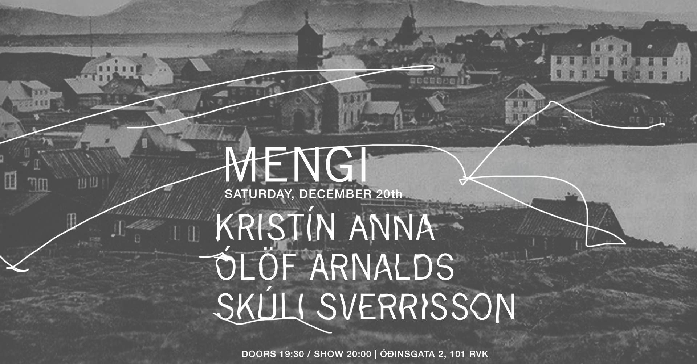
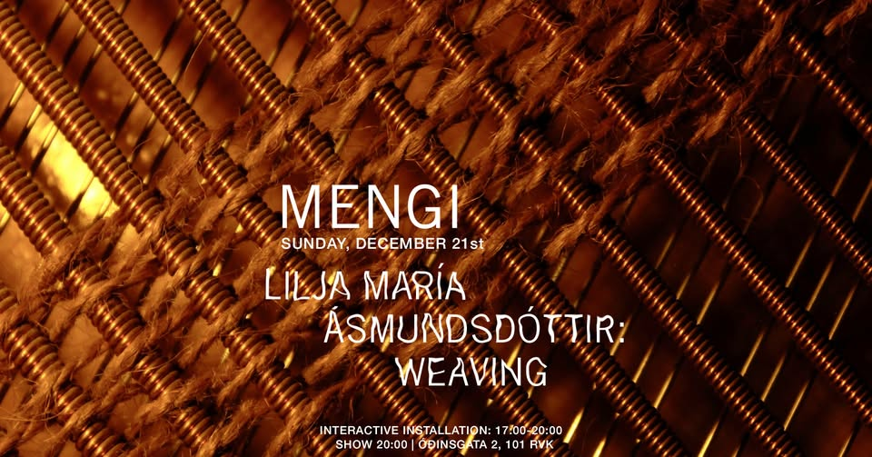

Upcoming Events

THU 12.12 JFDR
Tickets Friday, December 12th JFDR doors 19:30 / show 20:00 2500kr / 2000kr students / pay what u can i've been working on some new songs over the last year and a half and realised i was mostly working with lots of voices, layered and in harmonies, and the good old guitar. so this fall i reached out to some friends who i knew had beautiful voices but also were interested in playing more guitar and we started meeting up regularly and learn and workshop these new songs together. we had a great time playing them at iceland airwaves a couple of weeks ago and now we're going to bring it to mengi. the players are: áslaug magnúsdóttir, anna róshildur and fríða björg pétursdóttir. JFDR is Jófríður Ákadóttir. As a 14 year old in Reykjavik Ákadóttir began her musical career exploring the vast universe of experimental music while retaining a massive heart at her core. Over the past 12 years Ákadóttir has released 12 records including as a member of Pascal Pinon & Samaris collaborated with renowned artists Ólafur Arnalds and Damien Rice, scored the award-winning Icelandic film Backyard Village and garnered fans across the world – including Björk who cites Ákadóttir as an inspiration. Following 2017’s Brazil (her first record as JFDR), Ákadóttir returned with 2020’s New Dreams “very haunting electro-pop music that’s very subtle very inward looking” (NPR Music) and “the kind of album that might give you space to reach your own small revelations” (Stereogum). Her new album Museum is out now. In March 2024 it won Icelandic album of the year at the Iceland Music Awards.

SAT 13.12 SPACESTATION Jólacoustic tónleikar + Iðunn Einars
Tickets Saturday, December 13th SPACESTATION JÓLATÓNLEIKAR / IÐUNN EINARS doors 19:30 / show 20:00 2.990kr Strákarnir í hljómsveitinni Spacestation hafa farið svaðilför um Íslenska tónlistarsenu seinustu misseri og hafa fest sig í sessi sem eitt öflugasta rokkband hér á landi um þessar mundir. Sveitin gaf út plötuna “Reykjavík Syndrome” fyrr á árinu sem hlaut lof gagnrýnenda og miklar vinsældir. Spacestation hefur einnig verið að gera mjög góða hluti erlendis en seinastliðna mánuði hafa þeir verið á tónleikaferðalagi um Evrópu og spilað í 14 borgum og fengið mjög góðar móttökur. Að loknum túrnum tekur við löngu verðskuldað jólafrí og friður og ró og ætla strákarnir að halda uppá það með þægilegum og kosy jólatónleikum í Mengi þann 13. desember næstkomandi. Seinustu tónleikarnir sem bandið spilar þetta árið! Spacestation spilar indí rokkað post-punk með shoegaze’uðu 60’s rokk ívafi. En lætin fá að víkja í þetta sinn og verður kvöldið með öllu rólegra móti þar sem þetta verða svokallaðir “acoustic” tónleikar, þeir fyrstu sinnar tegundar sem bandið flytur. Ekkert pedala stapp eða feedback suð heldur bara ljúfir strengjaslættir og kertaljós, tími til kominn eftir allann hamagang ársins. Hver veit nema nokkur jólalög komi við sögu? Og jafnvel jólagestur??

WED 17.12 One Dance After Another - Ásrún Magnúsdóttir
Tickets Wednesday, December 17th ONE DANCE AFTER ANOTHER Ásrún Magnúsdóttir, Ella Eidstad Pedersen, María Kristín Jóhannsdóttir doors 19:30 / show 20:00 2500kr Vikivaki, Macarena, línudans, salsa, WAP, Fortnite, Y.M.C.A og allt þar á milli. Óður til dansanna sem hafa sameinað venjulegt fólk um allan heim í gegnum tíðina, hvort heldur sem er á dansgólfinu, Tiktok eða Popptíví. Hér sameinast dansarnir sem hafa sameinað okkur. Ásrún Magnúsdóttir er hugmyndasmiður verksins. Hún er danshöfundur sem hefur komið víða við. Í verkum sínum fær hún ólíklegasta fólk til að koma fram og teygir þannig út hefðbundnar hugmyndir um dans og kóreógrafíu. Ella Eidstad Pedersen er flytjandi verksins. Hún lauk dansnámi frá Listaháskólanum Í Osló en hefur prófað sitt lítið af hverju: tai chi, hip-hop, söngleikjadans, argentískan tangó, salsa, vouging, locking, halling, amapiano, kung-fu, dabke, hæla, street, rúmba, dancehall og mjög mikið tiktok inn í herbergi í covid. María Kristín Jóhannsdóttir er dj verksins. Hún er dansari og danshöfundur útskrifuð frá Listaháskóla Íslands. Í dansi hefur hún mestan áhuga á að kanna mörk sviðsetningar og veruleika. Þegar hún er ekki að dansa er hún venjulega að dj-a eða að plotta framtíðina. Ljósmynd: Maja Kleveland Straume —— English —— ONE DANCE AFTER ANOTHER Vikivaki, Macarena, line dancing, salsa, WAP, Fortnite, Y.M.C.A and everything in between. An ode to the dances that have united ordinary people around the world throughout history, whether on the dance floor, Tiktok or Popptíví. Ásrún Magnúsdóttir is the creator of the work. Her work aims to stretch the dominant modes of dance and choreography and has been received well at home and abroad. She is interested in amplifying voices that she feels might be heard better; giving the stage to other people to speak up, be seen and listened to. Ella Eidstad Pedersen is the dancer of the work. She studied contemporary dance at Oslo National Academy of the Arts but has done a little bit of everything: tai chi, hip hop, musical dance, Argentinian tango, salsa, voguing, locking, halling, amapiano, kung fu, dabke, heels, commercial street, rumba, dance hall and a lot of tiktok dances in her bedroom during covid. María Kristín Jóhannsdóttir is the dj of the work. She is a dancer and a choreographer graduated from Iceland University of the Arts. Her interest when it comes to dance and performance involves experimenting with the boundaries of performance and reality. When she’s not dancing she is usually DJing or plotting future moves. Photo: Maja Kleveland Straume

THU 18.12 Bridget Ferrill / Úlfur Hansson
Tickets Thursday, December 18th BRIDGET FERRILL (Berlin, DE) + ÚLFUR HANSSON doors 19:30 / show 20:00 2500kr / 2000kr for students / pay what u can BRIDGET FERRILL Bridget Ferrill is a composer, engineer, and synthesizer builder based in Berlin, Germany. By venturing into the realm of extended instruments, handmade electronics and experimental computer music, she explores the interface between noise and composition. Her solo recorded work has been released on Subtext Recordings and ENXPL. ÚLFUR HANSSON Úlfur Hansson is an Icelandic Brooklyn based solo musician, film composer and sound artist. Recent commissions have included works for the Tectonics festival curated by Ilan Volkov, The Icelandic Symphonic Orchestra, L’Orchestre De Radio France, and the Kronos Quartet. A piece written for an early prototype of the magnetic harp earned him the award of Composer of the Year at the International Rostrum of Composers.
SAT 20.12 Kristín Anna, Ólöf Arnalds, Skúli Sverrisson
Tickets Saturday, December 20th KRISTÍN ANNA, ÓLÖF ARNALDS, SKÚLI SVERRISSON doors 19:30 / show 20:00 3000kr / pay what u can A cozy, holiday concert from three of Iceland's best!
SUN 21.12 Lilja María Ásmundsdóttir: Weaving
Tickets Sunday, December 21st WEAVING Interactive installation: 17:00 – 20:00 (pay what you can) Performance: 20:00 – 21:00 (2500kr / 2000kr students) The installation WEAVING is designed around the living sound sculpture Core Being. Instead of presenting a specific final form, the sculpture creates conditions for exploring a world that is always in the making. The sculpture is in continuous development as it takes on different roles and morphs into various shapes, of which this installation is one. Like the sculpture, the installation is inspired by subterranean textures and collaborative structures in nature, specifically mycorrhizal fungi that exist in symbiosis with plants. The sculpture is made from wood and hand-dyed threads. The threads are stretched between the wooden panels and extend from the sculpture into its surroundings. Finding inspiration in Ragnheiður Erla Björnsdóttir’s text Morphology of the Fungi, sound artist Lilja María Ásmundsdóttir weaves a soundscape based on real-world geophone recordings meeting the imagined subterranean habitat of the sculpture. On December 21st between 17:00 and 20:00, the audience is invited to interact with the installation and activate its sound world through touch, or explore the space and listen to the soundscape. Visitors are welcome to come and go as they please, stay for a short while or a longer time. At 20:00, dancer Inês Zinho Pinheiro and Lilja María will perform inside the installation.

FRI 21.01 lúpína luppar
Tickets Friday, January 23rd LÚPÍNA LUPPAR doors 19:30 / show 20:00 3000kr Taking a new spin on her released and unreleased music, lúpína will create a unique experience where she will transport you into a world of vocal layers and live looping. This is a one time experience, where she will create sounds by only using loops of her voice, synths and piano. Join lúpína for this intimate re-creation of her music in an unplugged setting. Lúpína is an Icelandic/Norwegian singer, producer and songwriter. She began her journey by releasing her dreamy Icelandic synth pop single alein in autumn 2022. Since then, she has captivated audiences with her debut album ringluð in 2023 followed by MARGLYTTA in 2024. MARGLYTTA is an ode to herself, allowing people to see through her and her emotions - just like a jellyfish. Lúpína's unique style and impressive performances earned her the 2024 Iceland Airwaves Plus award, where she got the opportunity to perform at the New Colossus festival in 2025. This was followed by showcases at SXSW in Austin and Roskilde. Today, lúpína is a rising artist in the Icelandic and international music scene.

WED 28.01 HOYM / Bjarni Daníel
Tickets Wednesday, January 28th HOYM / Bjarni Daníel doors 19:30 / show 20:00 2500kr / 2000kr students / pay what u can HOYM will play songs from their debut EP, Lög frá Farbraut — a captivating six-track EP written and performed in Faroese and Icelandic. The EP is the result of a unique collaboration between Elinborg Pálsdóttir (FO), Lea Kampmann (FO), and Katrín Helga Ólafsdóttir/k.óla (IS), three voices in the Nordic music scene brought together by a shared artistic vision and deep-rooted friendship. The EP was recorded in the south of Iceland in January 2025, where the trio immersed themselves in the creative process. With a sound that blends introspective folk and acoustic vibes, Lög frá Farbraut explores themes of belonging, and emotional connection — bridging cultures, languages and landscapes. The songs were recorded live in a studio with a fireplace in the background, and the trio was gathered around one microphone, each with an acoustic guitar. All the songs were captured in just a few takes, preserving the raw emotion and intimacy of the moment. HOYM was born from the artists’ time together at the Rhythmic Music Conservatory in. Each member of HOYM has an established solo career, and numerous releases under their own names. Now, they unite their voices to form something new: a project grounded in femininity, presence and collaborative spirit. "We wanted to create something that celebrates both our shared roots and our individual voices. Writing together in our mother tongues — Faroese and Icelandic — felt like a powerful way to honour where we come from, while also pushing ourselves into new territory," the trio shares.